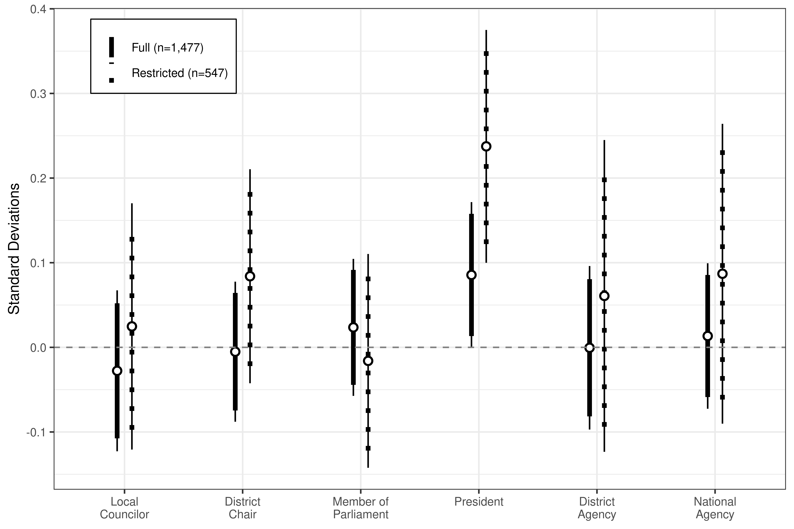
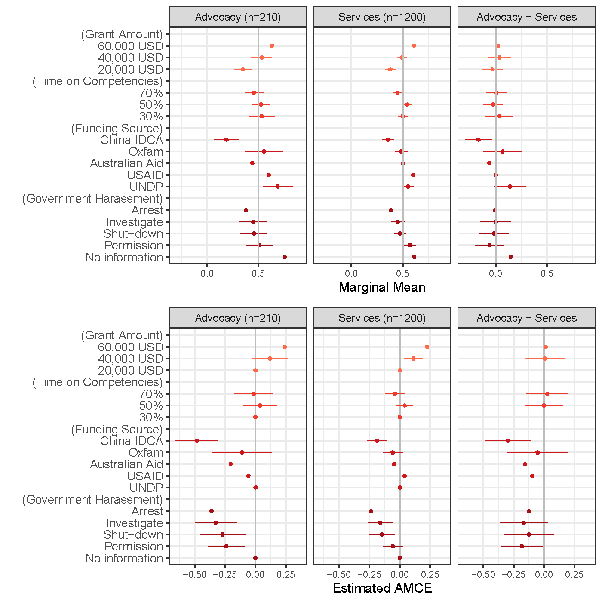
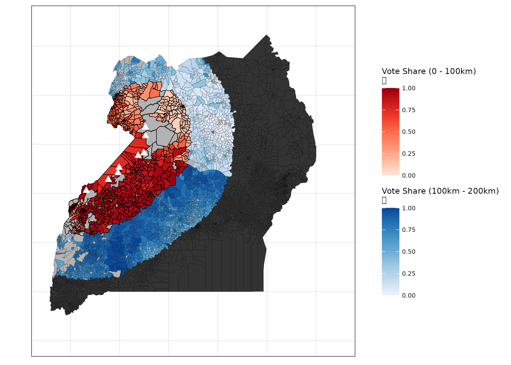
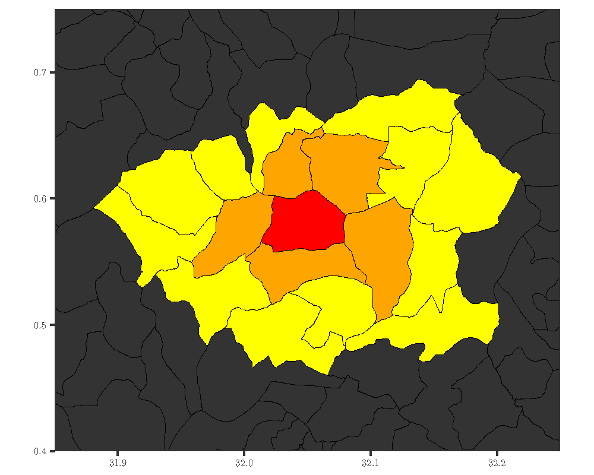
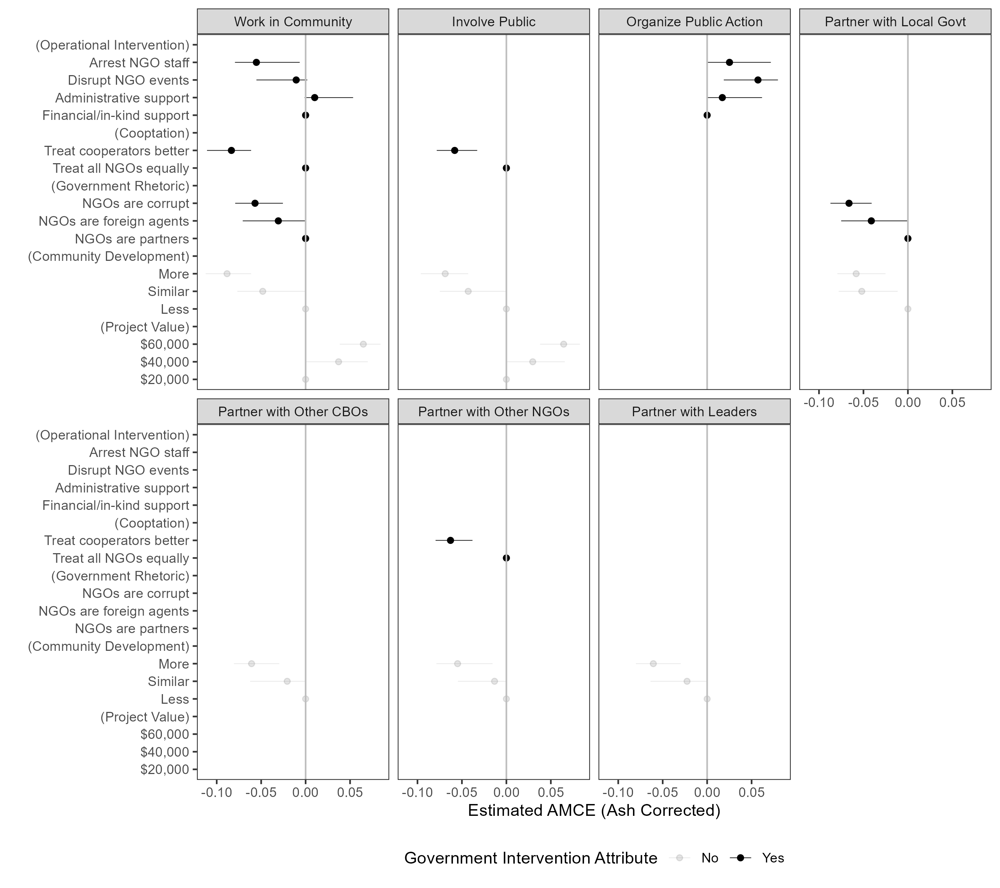
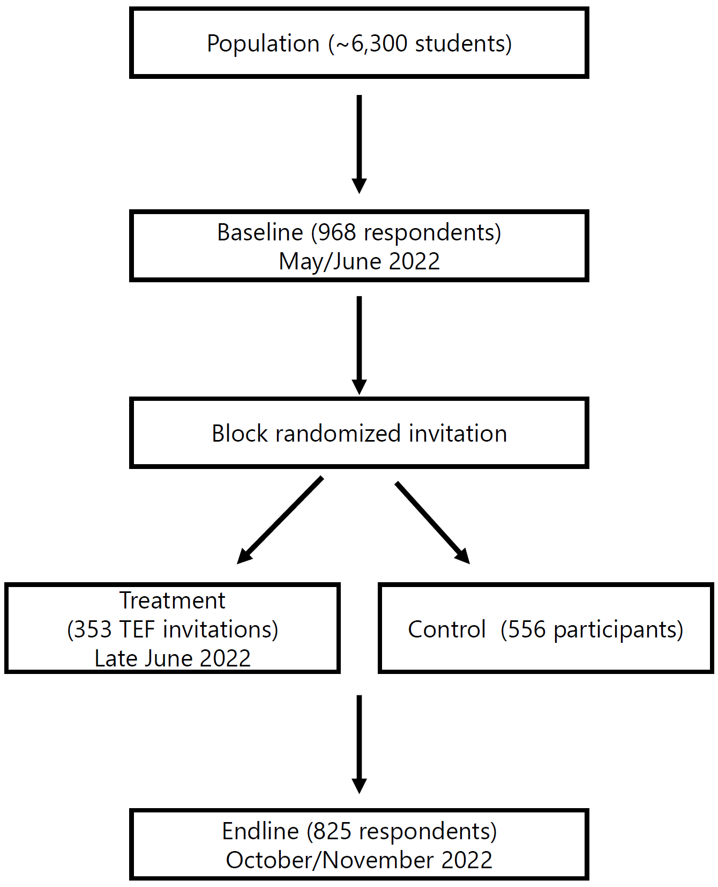

Research
Academic Publications
The Political Economy of NGO Service Provision: Evidence from an Ancillary Field Experiment in Uganda
World Politics 74, no. 4 (October 2022). [paper][appendix][PAP][online][data]
In developing countries, the share of basic services delivered by NGOs has grown dramatically due to increased receipt of aid and philanthropy. Many scholars and practitioners have worried that NGOs reduce reliance on government services, lowering demand for government provision and undermining political engagement. Others argue that NGOs prop-up poorly performing governments that receive undeserved credit for the production, allocation, or welfare effects of NGO services. Using a randomized health intervention implemented parallel to a similar universal government program, I investigate the effect of NGO provision on political attitudes and behavior. Access to NGO services increased preferences for NGO provision relative to government provision. However, political engagement and perceptions of government legitimacy were unaffected. Instead, results suggests the intervention generated political credit for the incumbent President. I find evidence that citizens see NGOs as a resource controlled by powerful government actors, and they reward actors seen as responsible for allocation.

The Effect of Government Repression on Civil Society: Evidence from Cambodia
International Studies Quarterly, 2022, 66. [paper][appendix][PAP][online]
First author, with Edmund Malesky, Lucy Right, and Erik Wibbels
NGOs are a core component of a robust civil society and operate in a wide variety of sectors, ranging from service delivery to political advocacy. However, research has yet to systematically investigate whether the impact of government repression varies across NGO activities. We hypothesize that advocacy NGOs are more affected by repression than those in service delivery. Surveying 176 employees from 106 NGOs in Cambodia, we employ a conjoint experiment to examine how the level of repression affects a task crucial to NGOs’ survival: obtaining funding via grant applications. We find that while increases in the severity of repression appears to have a stronger deterrent effect for advocacy NGOs, repression has a large deterrent effect on service NGOs as well. Interviews and text analysis of open-ended questions suggest that local officials target both advocacy and service delivery NGOs, but for different reasons. Our findings speak to the spread of authoritarianism and the challenges NGOs face in countries with closing civic spaces.

Oil Discoveries and Political Windfalls: Evidence on Presidential Support in Uganda
Political Science Research and Methods, 2023 [paper] [appendix]
Second author, with Laura Paler, Guy Grossman, and Jan Pierskalla
It is widely believed that oil discoveries cause bad governance and conflict. However, research on the political resource curse argues that oil often increases support for incumbent chief executives while the conflict curse literature suggests it erodes it, especially when discovered in opposition areas. We draw on research on distributive politics to theorize how the effects of oil on incumbent support will vary depending on whether it is discovered in core, swing, or opposition constituencies. Our findings, based on electoral and survey data from Uganda and a difference-in-differences design with heterogeneous effects, show that differential voter responsiveness to targeted oil benefits increased support for the incumbent when oil is discovered in swing constituencies. Ultimately, we highlight how the local political context shapes the effect of oil on the strength of support for the incumbent chief executive, with important implications for understanding the roots of both the political and conflict curses.

Under Review
Aid Flows and Incumbency Advantage: Evidence from NGO Projects in Uganda
[paper][appendix]
Revise & Resubmit, World Politics
Most studies of electoral returns to foreign aid focus on projects implemented by aid-receiving governments and subject to political control. Recently, donors have sought to bypass political capture by channeling aid through NGOs. Combining fine-grained spatial data on aid and elections in Uganda, I show that although NGO-implementation reduces political influence, voters still reward incumbents for NGO projects. To isolate a causal effect, I use difference-in-differences designs, matching on covariates selected using machine learning, and a placebo test based on spatial lags. Using original survey data, I show that credit results from citizens seeing powerful politicians as controlling the allocation of NGO projects. Drawing on health, election, and campaign data and an extensive battery of tests, I provide additional evidence for the mechanism and rule-out alternative explanations. Even when designed to prevent political windfalls, development assistance may entail a trade-off between improving the welfare of citizens and strengthening autocrats.

The Effect of Government Intervention on the Operational Decisions of NGOs: Evidence from a Survey Experiment in Three Electoral Autocracies
with Erik Wibbels, Maria Nagawa, Graeme Robertson, and Simon Hollerbauer
[paper][appendix]
Repressive governments seek to influence the behavior of domestic NGOs with both carrots and sticks. How do these efforts shape NGO operations? We identify common actions to influence NGOs: repressive and accomodative interventions in NGO operations, positive and negative rhetoric, and cooptation. Using a survey experiment of 425 NGO directors in Cambodia, Uganda, and Serbia, we investigate how community-level variation in the prevalence of these actions shape NGO preferences over where, how, and with whom they work. As expected, government interventions shape where NGOs prefer to work, raising concerns about how NGO benefits are distributed. Additionally, cooptation isolates NGOs, making them less likely to involve the public in planning or partner with other NGOs. However, moderate repression increases NGO preferences for organizing public action, suggesting NGOs see public mobilization as an effective strategy to resist some forms of repression. Importantly, these results hold across NGOs operating in very different sectors and countries. Panel data from Cambodia documents this finding in self-reported real-world behavior. These findings shed light on how NGOs navigate democratic backsliding.

Fostering Civic Engagement in Polarized, Autocratic Regimes: Evidence from a Field Experiment in Ethiopia
with Sewareg Adamu, David Dow, Fitsum Hailu, Mesele Mengsteab, and Juan Tellez
[paper][appendix]
There is a sustained effort by scholars and practitioners to understand how to increase civic participation, based on the premise that increased engagement improves governance. Most of this work has been conducted in stable, civically liberal societies. However, in autocratic and polarized settings, there is a risk that new engagement will be stifled or take on an illiberal form. We present evidence from a civic engagement field experiment in Ethiopia, an electoral autocracy with deep ethnic polarization. We randomized invitations to workshops aimed at fostering tolerant civic engagement among Ethiopian youth. Four months post-intervention, we observed increases in both self-reported and behavioral measures of civic engagement, effects that increase with the formation of new social ties. Some of that participation, however, was organized along ethnic lines, but without worsening inter-group attitudes. Our results indicate that fostering new engagement in illiberal contexts is possible, but likely to be channeled through existing opportunity structures.

The Effect of Closing Civic Space on Aid: Evidence from 2.3 Million Donor Projects
with Lucille Right and Erik Wibbels
Government efforts to restrict civic space have increased dramatically, including laws that constrain the operations of non-governmental organizations (NGOs). Despite these laws conflicting with the interests and objectives of many foreign donors, they have been especially common in aid-receiving countries. How do donors respond, and do their responses vary according to their historical prioritization of advocacy work? On one hand, advocacy-oriented donors may push back by increasing funding to projects that support advocacy relative to other donors. Alternatively, advocacy-oriented donors may back down by disproportionately decreasing support for advocacy as it becomes more difficult to work with local partners. We test these arguments using dyadic data on aid flows, original global data tracking NGOs laws, and a variety of research designs event study models, synthetic control analysis, and placebo tests. We find that advocacy-oriented donors back down, with implications for the incentives aid-receiving countries face when engaging in democratic backsliding.
Selected Policy Reports
Resurgent Authoritarian Influence: Evidence from Machine-Generated, Cross-National Data [Final Report]
Prepared for USAID Analytic Task on Authoritarian Resurgence and Influence; August 2023
In recent years, scholars and policymakers have expressed growing concern about powerful non-democracies becoming more assertive in their foreign policy. According to popular accounts, this has included increased attempts by Russia and China to influence political outcomes in less powerful nations. To date, the absence of quantitative data has limited systematic investigation of this resurgence of authoritarian influence (RAI). This report has six objectives. First, we describe limitations of extant data on Russian and Chinese influence. Second, we introduce a unique, high-frequency dataset that relies on machine learning to track 22 different modes of influence by Russia and China in 56 low- and middle-income countries between 2012 and 2023. Third, we describe the construction of indices that summarize foreign influence in distinct RAI themes. Fourth, we describe trends in RAI since 2012, including the specific tools used to influence target countries. Fifth, we use our high-frequency data to forecast RAI activity; we show that in many cases, the forecasts are quite accurate. Sixth, we introduce a new set of online dashboards that analysts and researchers can use to visually explore RAI activities and forecasts in unprecedented detail.
The Effect of Social Ties on Engagement & Cohesion: Evidence from Ethiopian University Students
[Findings Report DEC ID: PA-021155] [Pre-Analysis Plan: w9rvm] [Project website] [Project outputs]
Prepared for USAID Ethiopia and LASER PULSE; March 2023
In Ethiopia, Youth represent a large and growing share of the population. However, as in many other countries, youth are less civically and politically engaged than older citizens. This engagement gap means that youth issues are often neglected by policymakers. Thus, increasing youth participation in civic and political life is crucial for fostering policies that better serve Ethiopia’s youth. At the same time, it is important that increased engagement does not exacerbate Ethiopia’s existing societal divisions. To address these policy challenges, we designed and implemented a series of workshops involving AAU students designed to increase engagement by connecting students with political and civic leaders, providing them with potential sources of information and actionable opportunities to participate in civic life, and politically interested peers, creating a social incentive for engagement. At the same time, these forums fostered inter-ethnic social contact and deployed a curriculum emphasizing common youth and national identities. The impact of these workshops were evaluated using a randomized control trial (RCT) design comparing workshop participants with a similar “control” group of students on a variety of attitudinal and behavioral outcomes related to civic and political engagement, inter-group tolerance, and social cohesion. Findings show that the intervention had a significant and positive impact on students’ civic engagement in the months after the intervention. For students that formed new social ties as a result of their participation, there was also a positive and significant increase in political engagement. However, the intervention also increased sectarian forms of engagement, such as joining an ethnic or religious organization, and did not improve political or ethnic tolerance or attitudes regarding social cohesion. This evaluation shows that youth engagement can be increased by creating new peer-to-peer social ties through an extremely low-cost, short-term intervention. Practitioners and policymakers can apply and test these tools in new contexts or at larger scales, including non-university youth populations. However, practitioners and policymakers should also experiment with new ways to pair these interventions with efforts to increase tolerance and social cohesion.
ResiliencyCambodia Impact Evaluation [Findings Report DEC ID: PA-00Z-KBD] [Pre-Analysis Plan: nzt7u]
[Design Report: PA-00W-CZ5] [Baseline Report: PA-00X-47C]
Prepared for USAID Cambodia; Learning, Evaluation, and Research Activity II; August 2022
In Cambodia, civil society organizations (CSOs) play a critical role as service providers and advocates. However, shrinking civic space and volatile donor funding threaten the ability of civil society to do this important work. We conducted an innovative impact evaluation (IE) testing an intervention designed to build CSOs’ resiliency to closing civic space and funding uncertainties through capacity-building, network-strengthening, and financial diversification. The LO-MTSR team recruited 105 Cambodian CSOs to participate in the ResiliencyCambodia program. The team then assigned each CSO to a treatment arm using matched-quadruplet randomization, resulting in a sample of 49 treatment and 53 control organizations. To investigate each evaluation objective, the evaluation utilizes organization-level data measuring changes in organizational administrative and managerial practices, challenges that affect their operations, networks and networking efforts, and revenues and revenue-seeking activities. Data sources include a baseline and endline survey, comprehensive data on Facebook posts and interactions during the project period, and detailed financial data collected by digitizing and classifying each CSO’s records for the 2019 and 2021 fiscal years. The bulk of the evidence suggests that ResiliencyCambodia did not cause meaningful improvements in CSO capacity, networks, finances, or resiliency to closing civic space. Small differences in how outcomes for treatment and control CSOs changed over time suggests these results are not attributable to small sample sizes or attrition from the evaluation sample. Furthermore, null results across both objective and self-reported measures strengthens the team’s conclusion. However, the ResiliencyCambodia intervention still provides many lessons and recommendations for future USAID capacity-building programs.
Radio And Social Media In Ghana Assessment Report
[Final Report] [Pre-Analysis Plan: nzt7u]
Prepared for USAID Ghana; July 2023
Ghana has experienced remarkable growth in its media sector, with radio and social media platforms playing a pivotal role in shaping public discourse and facilitating the exchange of information. However, with increasing concerns being raised about the ability of radio and social media outlets to spread misinformation, it is important to understand the dynamics of these communication channels, particularly considering the challenges posed by misinformation and disinformation, the rise of violent extremism in the Sahel region, and the upcoming local and national elections in Ghana. To generate evidence on these important considerations, we conduct a large survey of radio station managers in Ghana. Our survey provides unique descriptive data on Ghana’s radio landscape and lends insights into the factors driving programming decisions drawn from a survey experiment.
Retrospective of USAID’s Response to Pandemic-Enabled Democratic Backsliding [Final Report DEC ID: PA-00Z-6HN]
Prepared for USAID Center for Democracy, Human Rights, and Governance; January 2022.
The COVID-19 pandemic created at least two major challenges for the United States Agency for International Development’s (USAID’s) Democracy, Human Rights, and Governance (DRG) programming. First, in many countries, the pandemic exacerbated the very problems associated with democratic backsliding that DRG programming is designed to address. Second, the pandemic has constrained USAID’s and other donors’ abilities to respond, with reduced in-person activities and staff working remotely. In 2021, DevLab and Cloudburst conducted a systematic review of DRG response to the challenges of COVID-19. DevLab lead on the use of Machine Learning for Peace (MLP) project data (see Section 4 later in this document), as well as other public data, to assess the impact of the pandemic on civic space around the world. DevLab also led the design and dissemination of a survey of DRG officers from a large sample of Missions in 31 different countries. The results from the survey of DRG officers provided details on how broader trends uncovered in the MLP data map onto specific government actions.
CSO Social Media Activity: Midline Report [Report]
Prepared for USAID Cambodia Mission; June 2021
Facebook has also become a critical tool used by Civil Society Organizations (CSOs) in many countries to disseminate information, raise awareness, and raise revenue through donations. For these reasons, Facebook is a valuable tool for CSOs in Cambodia to engage with the general public, their communities, and with potential donors. ResiliencyCambodia aims to increase CSOs’ social media skills and use through a designated training module beginning in Summer 2021. To collect data on CSOs’ Facebook use and public engagement with these organizations’ content, we asked each CSO in our sample to identify their social media accounts in the pilot survey included in the Call for Organizations application. For organizations that did not provide information about the social media accounts, we attempted to identify theirFacebook account by hand. In total, we identified a Facebook account for 97 out of 105 participating CSOs. Using machine-scraping, we collected information about each post made to a CSO’s Facebook page before April 2021, including the date of the post, it’s content(text and images), and the number of likes, comments, and shares that the post received.In total, we collected data on almost 26,000 Facebook posts. We see some evidence that prior to the social media training, treatment CSOs have increased their posting frequency, their monthly shares have decreased less, and they have gained more followers compared to control CSOs. However,measuring and conditioning on these pre-treatment trends should help us to isolate the effect of the training beyond any effect caused by the larger intervention.
Mapping CSO Networks: Evidence from a Survey of NGOs in Cambodia [Report]
Prepared for USAID Cambodia Mission; February 2021
The concept of civil society implies a dense network of individuals and organizations capable of engaging in collective action in pursuit of shared goals. In addition to being necessary for collective action, networks also convey material benefits to individuals and organizations, including facilitating the flow of resources between units, whether these resources are material, legal, political, or technological. This research memo seeks to map the networks of a sample of 105 Cambodian Civil Society Organizations (CSOs). In this memo, we focus on formal and informal partnerships between CSOs over the past year as a measure of CSO connections. The data that we have on CSO networks is drawn from a convenience sample of CSOs (rather than a random sample from the population of Cambodia’s CSOs), capturing only a fraction of the CSOs in Cambodia. For this reason, we cannot make inferences about the general structure of the CSO sector in Cambodia. However, we can assess the structure of the network within our sample and identify how many CSOs within our sample are connected either directly to one another or indirectly through a mutual third connection. We can also investigate how these characteristics vary across CSOs operating in different sectors. The ResiliencyCambodia network is highly segmented and highly centralized.Most CSOs in the sample are not directly connected through recent partnerships to any other CSO in the sample. Furthermore, a large share of the connections that do exist are with one prominent Network CSO. This suggests that the capacity for collective action among Cambodian CSOs may be limited. Expectations about spillover effects of the treatment should be also tempered. However, all but four CSOs in the sample list at least one partner CSO, and many have indirect connections to other CSOs in the sample.
CSO Budget Data Accuracy: An Analysis Using Benford’s Law [Report]
Prepared for USAID Cambodia Mission; December 2020.
This research memo uses Benford’s Law to assess the accuracy of budget data submitted by a sample of 105 Cambodian Civil Society Organizations (CSOs). Benford’s Law holds that the observed distribution of leading digits in many numeric distributions will follow a logarithmic distribution. This empirical phenomenon has been shown to apply to sources of data ranging from the surface area of rivers and the molecular weights of chemical compounds to house prices and the luminance values of pixels in photographs. Financial data also adheres to this law, and economists and forensic accountants have used Benford analysis successfully to detect misreporting and manipulation in the budgets of private firms and non-profit organizations. Our data come from self-administered online Qualtrics surveys of 105 Cambodian NGOs operating across the country in a variety of programmatic sectors. The survey constitutes the baseline for ResiliencyCambodia randomized capacity building and financial diversification intervention, and respondents received $10 for their participation. We find that our baseline data on CSO financial reports contains substantial evidence for nonconformity with Benford’s Law. This nonconformity appears more consistent with rounding and approximation in reporting than with intentional misreporting or fraud. While an analysis for individual CSOs does provide some evidence for nonconformity that is less clearly the result of rounding or approximation, the very small number of financial entries for individual CSOs limits our ability to identify misreporting with certainty.